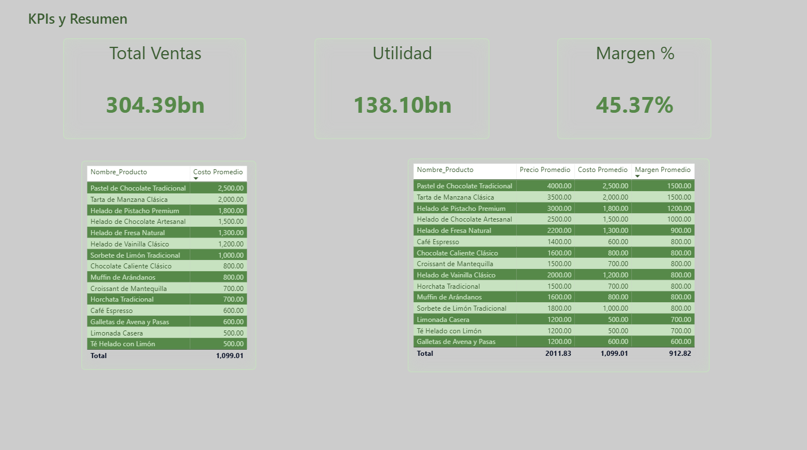
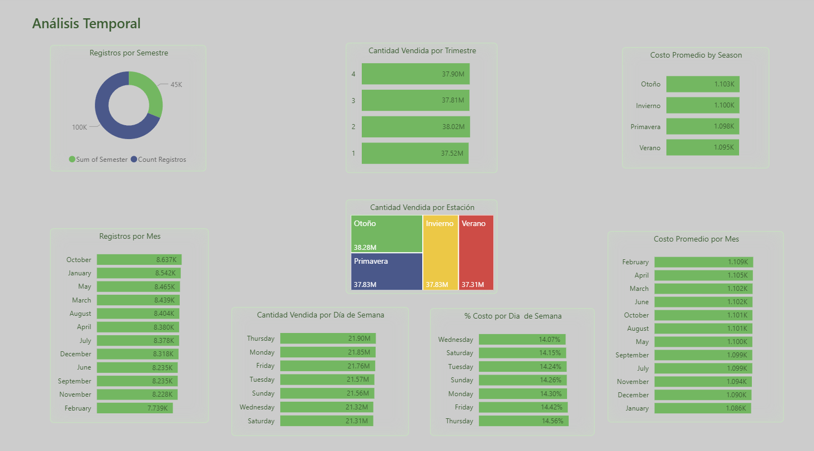
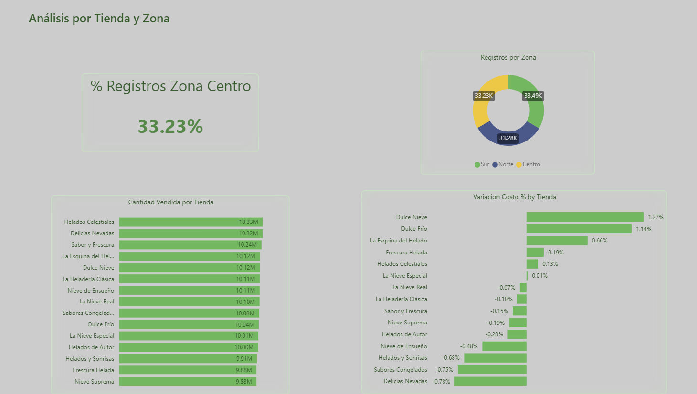
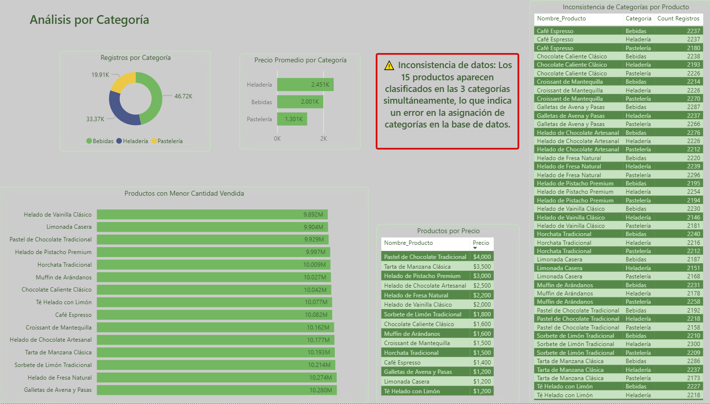
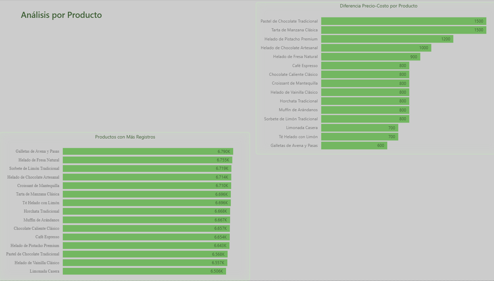

Project 12 – Bakery & Ice Cream Sales Analysis (Power BI)
Fiverr Project — Real Data — 5 Pages
Description
This 5-page Power BI report was built for a real student project using actual sales data from a bakery and ice cream business. The goal was to deliver a comprehensive, multi-dimensional analysis — covering overall performance, seasonal patterns, store-level comparisons, product profitability and category integrity — all within a single connected report.
Report Pages:
Page 1 — KPIs & Summary

- Headline KPIs: Total Sales (304.39bn), Profit (138.10bn) and Margin % (45.37%) — giving management the bottom line at a glance.
- Product-level cost table and a full price / cost / margin breakdown table covering all 15 products.
- Pastel de Chocolate Tradicional and Tarta de Manzana Clásica lead with the highest margins (1,500 per unit); Galletas de Avena y Pasas has the lowest (600).
Page 2 — Temporal Analysis

- Records by semester (donut chart): 100K in semester 1 vs 45K in semester 2 — a significant volume gap worth investigating.
- Quarterly sales volume is remarkably stable across all four quarters (~37.5M–38M), suggesting consistent demand year-round.
- Average cost by season is nearly flat (1,095K–1,103K), indicating stable input costs regardless of season.
- Monthly records and average cost by month reveal October and January as peak transaction months; February has the highest average cost.
- Sales by day of week: Thursday leads in volume; Saturday has the highest cost share (14.15%), Thursday the lowest (14.56% — note: this is cost %, not sales %).
Page 3 — Store & Zone Analysis

- Zone distribution is nearly equal: Sur (33.49K), Norte (33.28K) and Centro (33.23K) — no single zone dominates.
- Store-level ranking: Helados Celestiales leads in quantity sold (10.33M), closely followed by Delicias Nevadas and Sabor y Frescura.
- Cost variation by store: Dulce Nieve (+1.27%) and Dulce Frío (+1.14%) show the highest positive cost deviation; Delicias Nevadas (-0.78%) and Sabores Congelados (-0.75%) show the largest negative deviation — flagging potential pricing or cost inconsistencies.
Page 4 — Category Analysis

- Three categories: Bebidas (46.72K records), Heladería (33.37K) and Pastelería (19.91K).
- Average price by category: Heladería (2,451K) far exceeds Bebidas (2,001K) and Pastelería (1,301K).
- Key finding flagged directly in the report: a data inconsistency was detected — all 15 products appear classified under all 3 categories simultaneously, indicating a categorisation error in the source database. This was clearly communicated to the client as an actionable data quality issue.
Page 5 — Product Analysis

- Price-cost difference by product: Pastel de Chocolate Tradicional and Tarta de Manzana Clásica lead with 1,500 unit margin; Galletas de Avena y Pasas has the smallest gap (600).
- Products with most records: Galletas de Avena y Pasas (6.790K) slightly ahead of Helado de Fresa Natural (6.755K) — indicating steady demand across the full catalogue.
What makes this project stand out
- Delivered in the client's language (Spanish) with professional terminology throughout.
- Proactively identified and clearly flagged a data quality issue (category mis-assignment) rather than simply presenting misleading charts — demonstrating analytical integrity.
- 5 interconnected report pages covering every business dimension: finance, time, geography, category and product.
- Clean, consistent green-themed visual design across all pages.
Technical Details (for Data Analysts / Recruiters)
- Tool: Microsoft Power BI
- Language: Spanish (delivered in client's language)
- Data: Real sales data — bakery and ice cream business
- Report Pages: 5 (KPIs & Summary, Temporal Analysis, Store & Zone Analysis, Category Analysis, Product Analysis)
- Visuals used: KPI cards, donut charts, bar charts, treemap, data tables, matrix tables
- Notable: data quality issue independently identified and communicated to the client